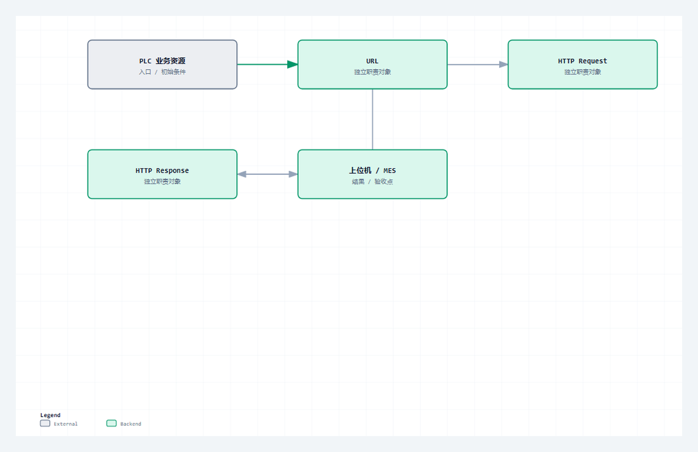

先不写 PLC 状态机，也不背术语。从上位机读取设备状态这个需求出发，把 Client、Server、资源、URL、请求、响应、方法、状态码、Header 和 Body 放进同一笔真实对话。
适合谁收藏
- 第一次系统理解 HTTP 的 PLC 工程师。
- 已经会调用通信功能块，但分不清 TCP 连通与 HTTP 完整事务的人。
- 需要建立后续 Server、Client 学习坐标的读者。
基础认知，第 1/4 篇；主系列第 01/28 篇。
现场问题
PLC 里有运行状态、产量和报警记录，上位机需要读取它们。双方当然可以私下约定 READ_STATUS 和 1,1250,0，但一旦增加查询条件、写入参数、错误结果和不同数据格式，这套私有字符串就会迅速失去边界。
HTTP 解决的不是“怎样控制 PLC”，而是不同程序怎样用统一格式描述一件事：请求方要操作哪个资源、准备做什么、携带了什么内容；响应方是否处理成功、返回了什么、消息到哪里结束。
先给结论
HTTP 是应用层的请求/响应协议。Client 主动发送一条完整请求，Server 针对一个资源返回一条完整响应；URL 标识资源，方法表达操作意图，状态码表达处理结果，Header 描述消息，Body 承载内容。

读图重点
这张图只压缩本篇的判断路径。读图时先找“Client / Server”对应的输入边界，再沿着“状态码、Header、可选 Body”检查状态怎样推进，最后用“说明处理结果以及返回什么”确认输出是否已经形成验收证据。
把对象和边界分开
| 对象或阶段 | 工程职责 | 现场观察点 |
|---|---|---|
| Client / Server | 发起请求 / 返回响应 | 同一台 PLC 可以同时承担两种角色 |
| Resource / URL | 被操作的对象 / 对象地址 | /api/status 标识设备状态资源 |
| Request | 方法、目标、Header、可选 Body | 说明想做什么以及携带什么 |
| Response | 状态码、Header、可选 Body | 说明处理结果以及返回什么 |
把一问一答逐行读完
上位机读取 PLC 状态时，可以发送：
GET /api/status HTTP/1.1
Host: 192.168.1.20:8088
Connection: close
第一行表示“使用 HTTP/1.1，以 GET 方式读取 /api/status 资源”。Host 指明本次请求对应的主机；空行表示 Header 到此结束。这个 GET 没有 Body。
PLC 返回：
HTTP/1.1 200 OK
Content-Type: text/plain
Content-Length: 7
Connection: close
running状态码 200 表示这一条请求已经成功处理。Content-Type 说明 Body 是普通文本，Content-Length: 7 说明 Body 正好是 7 个字节。running 才是返回内容。
写入设定值时，消息会多出 Body：
POST /api/setpoint HTTP/1.1
Host: 192.168.1.20:8088
Content-Type: application/json
Content-Length: 15
Connection: close
{"value":125.5}JSON 只是 Body 的一种数据格式。TCP 负责传字节，HTTP 负责定义请求和响应，JSON 负责表示 Body 内的数据，PLC 应用负责决定这份数据能否改变设定值。四者不能互相替代。
从协议约束到代码职责
协议约束
HTTP 是应用层的请求/响应协议。Client 主动发送一条完整请求，Server 针对一个资源返回一条完整响应；URL 标识资源，方法表达操作意图，状态码表达处理结果，Header 描述消息，Body 承载内容。 这条结论先限定消息什么时候成立，再限定哪个角色可以消费结果。若绕过协议边界直接驱动业务，半包、超时、重复执行和连接残留就会进入应用层。
工程抽象
请求第一行由方法、请求目标和 HTTP 版本组成，例如 GET /api/status HTTP/1.1。Header 结束后必须有空行；如果请求带 Body，消息还要用 Content-Length 或 Transfer-Encoding 说明 Body 边界。响应第一行改为版本、状态码和原因短语，例如 HTTP/1.1 200 OK。
状态码不是网络状态。TCP 已连接后仍可能收到 400，说明通道成立但请求格式不合法；也可能收到 404，说明请求合法但资源不存在。只有把传输、协议和业务结果分开，后面的 PLC 状态机才不会只剩一个含义模糊的 bError。
- Client / Server：工程职责是“发起请求 / 返回响应”。它不能只停留在命名层面，运行时必须能通过“同一台 PLC 可以同时承担两种角色”观察到输入、状态或结果；否则这一层即使有代码，也没有形成可验证边界。
- Resource / URL：工程职责是“被操作的对象 / 对象地址”。它不能只停留在命名层面，运行时必须能通过“
/api/status标识设备状态资源”观察到输入、状态或结果；否则这一层即使有代码，也没有形成可验证边界。 - Request：工程职责是“方法、目标、Header、可选 Body”。它不能只停留在命名层面，运行时必须能通过“说明想做什么以及携带什么”观察到输入、状态或结果；否则这一层即使有代码，也没有形成可验证边界。
- Response：工程职责是“状态码、Header、可选 Body”。它不能只停留在命名层面，运行时必须能通过“说明处理结果以及返回什么”观察到输入、状态或结果；否则这一层即使有代码，也没有形成可验证边界。
程序单元
本篇主证据来自 ST_HttpRequest.st 中以 TYPE ST_HttpRequest 为定位点的连续源码。这里不是为了展示语法，而是把协议约束落到确定程序单元：输入先进入结构体或缓冲区，状态机只在本周期处理可确认的部分，长度和结束条件决定能否前进，错误码与指标负责把失败原因带出对象边界。这样一来，“HTTP 管理请求与响应，不直接管理 PLC 变量。”可以在代码、在线变量和外部报文之间逐项对照，而不是依赖经验猜测。
本篇核心源码片段
下面两段代码来自同一个真实文件 ST_HttpRequest.st，以 TYPE ST_HttpRequest 为中心连续截取，没有改写变量、删除分支或用伪代码替代。第一段用于确认入口与前置条件，第二段用于确认状态、边界和输出。核对时重点看“发起请求 / 返回响应”怎样进入对象，以及“说明处理结果以及返回什么”怎样证明本次处理已经结束。若两段之间的连续关系无法解释“Client 与 Server 是事务角色，不是设备的永久身份。”，就不能把局部代码截图当成实现证据。
片段一：入口、声明与前置条件
TYPE ST_HttpRequest :
STRUCT
eMethod : E_HttpMethod := E_HttpMethod.iUnknown;
sMethod : STRING(16) := '';
sTarget : STRING(GVL_Http.cnMaxTargetLen) := '';
sVersion : STRING(16) := 'HTTP/1.1';
sHost : STRING(GVL_Http.cnMaxHostLen) := '';
sContentType : STRING(96) := '';
sAuthorization : STRING(160) := '';这一段先回答对象在什么输入和状态下开始工作。阅读时要核对变量的初值、长度上限和启动条件，不能只看某个布尔量是否变成 TRUE。
片段二：状态推进、边界与输出
sAdditionalHeader : STRING(GVL_Http.cnMaxHeaderSize) := '';
sRawHeaders : STRING(GVL_Http.cnMaxHeaderSize) := '';
sBody : STRING(GVL_Http.cnMaxBodySize) := '';
bHasContentLength : BOOL := FALSE;
bTransferChunked : BOOL := FALSE;
bConnectionClose : BOOL := FALSE;
udiContentLength : UDINT := 0;
END_STRUCT
END_TYPE第二段继续展示同一连续源码范围。把它与第一段合起来，才能判断输入怎样被锁存、状态何时推进、边界何时满足，以及错误出口是否保留了足够诊断信息。
验证路径
| 场景 | 操作 | 通过口径 |
|---|---|---|
| 读取资源 | 手写 GET /api/status | 能指出方法、目标、Host 和空行 |
| 写入内容 | 手写带 JSON Body 的 POST | Content-Type 与 Content-Length 正确 |
| 解释响应 | 区分 200、400、404、500 | 不再把状态码当 TCP 状态 |
| 角色判断 | 分别描述 PLC 主动访问与被访问 | 能正确判断 Client 和 Server |
场景 1：读取资源
执行“手写 GET /api/status”前，先清理上一笔事务的完成脉冲、错误锁存和接收残留，再记录起始状态与计数。操作后同时观察外部报文、角色状态机和诊断量；只有三条证据共同指向“能指出方法、目标、Host 和空行”，这一场景才算通过。若只看到外部结果而内部状态未收口，应继续检查资源回收；若内部 Done 已出现而报文不完整，应回到消息边界重新取证。
场景 2：写入内容
执行“手写带 JSON Body 的 POST”前，先清理上一笔事务的完成脉冲、错误锁存和接收残留，再记录起始状态与计数。操作后同时观察外部报文、角色状态机和诊断量；只有三条证据共同指向“Content-Type 与 Content-Length 正确”，这一场景才算通过。若只看到外部结果而内部状态未收口，应继续检查资源回收；若内部 Done 已出现而报文不完整，应回到消息边界重新取证。
场景 3：解释响应
执行“区分 200、400、404、500”前，先清理上一笔事务的完成脉冲、错误锁存和接收残留，再记录起始状态与计数。操作后同时观察外部报文、角色状态机和诊断量；只有三条证据共同指向“不再把状态码当 TCP 状态”，这一场景才算通过。若只看到外部结果而内部状态未收口，应继续检查资源回收；若内部 Done 已出现而报文不完整，应回到消息边界重新取证。
场景 4：角色判断
执行“分别描述 PLC 主动访问与被访问”前，先清理上一笔事务的完成脉冲、错误锁存和接收残留，再记录起始状态与计数。操作后同时观察外部报文、角色状态机和诊断量；只有三条证据共同指向“能正确判断 Client 和 Server”，这一场景才算通过。若只看到外部结果而内部状态未收口，应继续检查资源回收；若内部 Done 已出现而报文不完整，应回到消息边界重新取证。
常见误判
- 把 HTTP 说成一种传输方式，没有说明它组织的是请求和响应。
- 把 Client 和 Server 当成设备类型，而不是一笔事务中的角色。
- 背出 GET 和 200，却说不清资源、Header、Body 和状态码怎样组成完整消息。
这些误判的共同点，是拿一个局部现象替代完整事务。定位时必须回到本篇的输入、状态、边界和输出四个坐标，并用相同输入完成回归。
这一篇你最该记住
- HTTP 管理请求与响应，不直接管理 PLC 变量。
- URL、方法、状态码、Header 和 Body 各有职责。
- Client 与 Server 是事务角色，不是设备的永久身份。
系列导航
- 系列：CodeSys HTTP 系列教程，第 01/28 篇。
- 阶段：基础认知，职责线位置 1/4。
- 上一篇：无，这是系列第一篇。
- 下一篇：第02篇
- 发布顺序：基础认知 -> Server -> Client -> 完整源码加更 -> 综合收束。
评论区预留
这里先保留评论和回复结构，不接入第三方服务。后续统一决定登录、匿名、审核、反垃圾和静态站兼容策略。